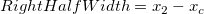
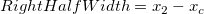

に対する線を引く場合、この線は、スペクトルデータ（入力データ）と2か所で交わる事になります。ここで なら、これらを
に対する線を引く場合、この線は、スペクトルデータ（入力データ）と2か所で交わる事になります。ここで なら、これらを ") と
と ") にします。さらに、
にします。さらに、 .") として、ピーク中心を示します。そして、左半幅を次のように算出します。
に対する線を引く場合、この線は、スペクトルデータ（入力データ）と2か所で交わる事になります。ここで なら、これらを と にします。さらに、 として、ピーク中心を示します。そして、右半幅を次のように算出します。
として、ピーク中心を示します。そして、左半幅を次のように算出します。
に対する線を引く場合、この線は、スペクトルデータ（入力データ）と2か所で交わる事になります。ここで なら、これらを と にします。さらに、 として、ピーク中心を示します。そして、右半幅を次のように算出します。

このページは、スタート ページの処理でピークの積分が選択されているときのみ、ピークアナライザで利用できます。これは、「ピークの検出」ページで見つかったピークの面積を計算するのに使用します。
| ダイアログテーマ | こちらを参照してください ピークアナライザーテーマ. |
|---|
| 積分する範囲の数 | これを使って、積分するピークの数を指定します。全てのピークにチェックが付いている場合、積分領域の数を編集することはできません。ボックスにチェックが付いておらず、数値(N)が入っている場合、最初のN個のピークが積分されます。 |
|---|---|
| 積分ウィンドウ幅 | 積分ウィンドウの幅を指定するのに使います。
|
| 左半幅 | すべてのピークに固定の幅ラジオボタンが選択されているときのみ、利用できます。それを使って積分矩形の左半分をセットすることができます。 |
| 右半幅 | すべてのピークに固定の幅ラジオボタンが選択されているときのみ、利用できます。それを使って積分矩形の右半分をセットすることができます。このコントロールの右で、同じチェックボックスが選択されている場合、このボックスの値は左半分の幅の値にセットされます。 |
| 積分 | 基線モードがなしに設定されている場合、このドロップダウンリストは表示されません。ドロップダウンを使って、基線あるいはy=0ぁらピーク面積を計算するかどうか指定します。
|
| 積分領域の表示 | 積分面積をグラフに表示します。 |
| ピークインデックスのタグを表示 | グラフ上にピークインデックスのタグを表示します。 |
| 積分結果 | 積分結果の出力先を指定します。 |
| 積分曲線のデータ | 累積積分データの出力先を指定します。ボックスにチェックがない場合、累積データは作成されません。 |
このグループのオプションを使って、積分結果で指定した範囲に出力する積分結果を編集することができます。結果データの1列は、それぞれのチェックボックスに対して作成されます。
| ピーク領域 | ピーク領域は、基線またはY=0から（積分の開始ドロップダウンリストの選択によって、）ピークデータ積分することで、計算できます。 |
|---|---|
| パーセントエリア | パーセントエリアは、ピーク面積/曲線エリアで計算されます。これは、全体の曲線において、面積を比較したそれぞれのエリアのパーセントです。 |
| 曲線エリア | 曲線エリアは、基線またはY=0から（積分の開始ドロップダウンリストの選択によって、）ピークデータ積分することで、計算できます。この値は、すべてのピークで同じになります。 |
| 行インデックス | ピーク中心のある行インデックスを出力します。 |
| 開始X | 各ピークの最も左側のデータのX座標 |
| 終了X | 各ピークの最も右側のデータのX座標 |
| ピークの中心 | ピークの中心のX座標 |
| ピークの高さ | Yのピーク高さは、選択したベースラインに関係します。 |
| FWHM | 各ピークの半値幅を出力するかどうかを指定します。 |
| 左半幅 | 左半分の幅を示します。に対する線を引く場合、この線は、スペクトルデータ（入力データ）と2か所で交わる事になります。ここで なら、これらを と にします。さらに、 として、ピーク中心を示します。そして、左半幅を次のように算出します。
|
| 右半幅 | 右半分の幅を示します。に対する線を引く場合、この線は、スペクトルデータ（入力データ）と2か所で交わる事になります。ここで なら、これらを と にします。さらに、 として、ピーク中心を示します。そして、右半幅を次のように算出します。
 |
| ピークの重心 | 重心のピーク中央、あるいは、中心は、次のように定義されます。
|